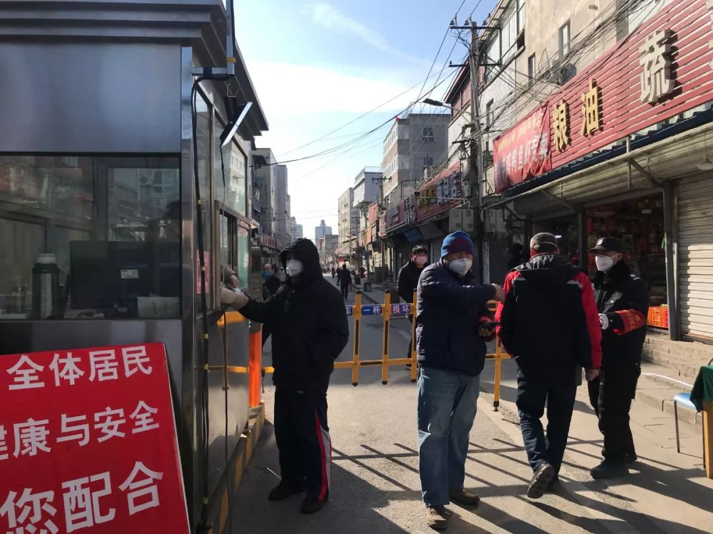
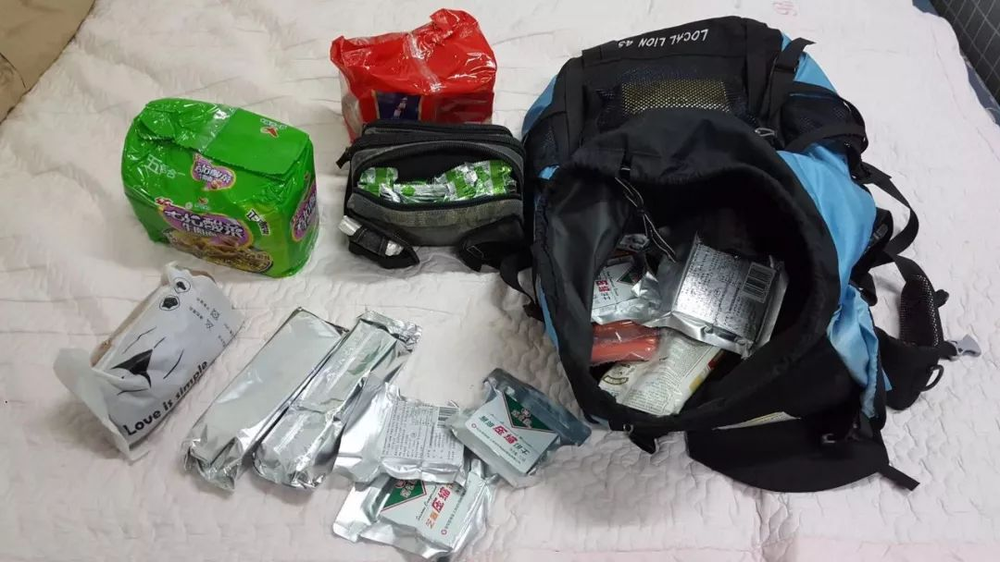
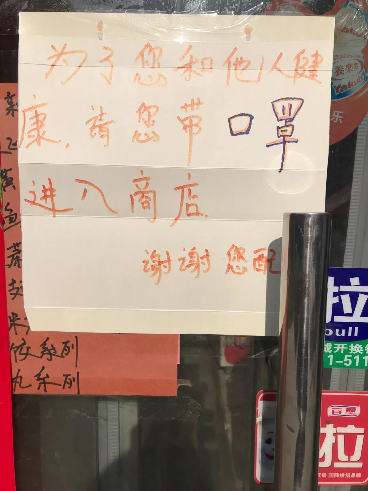
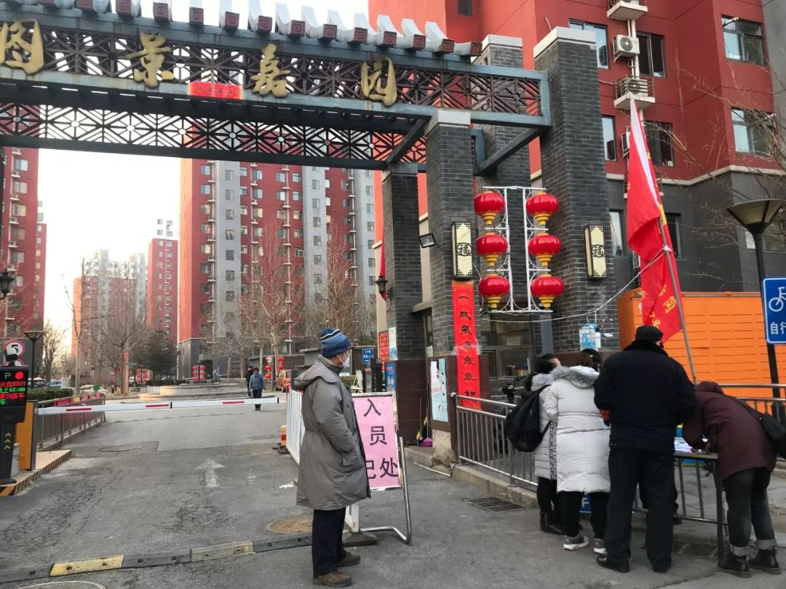
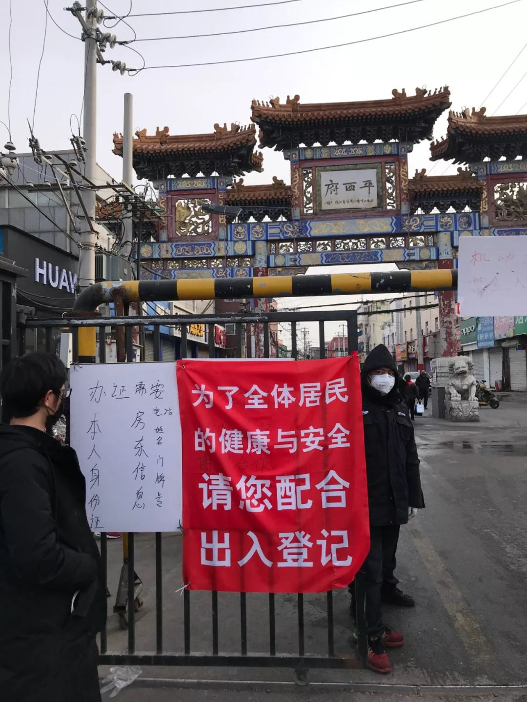
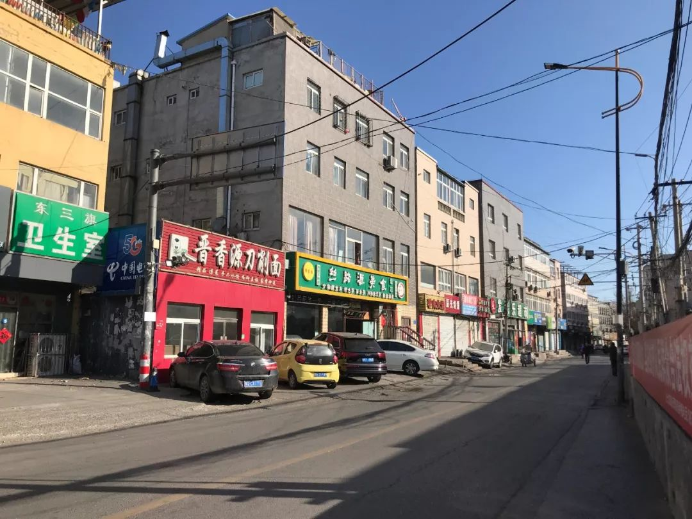
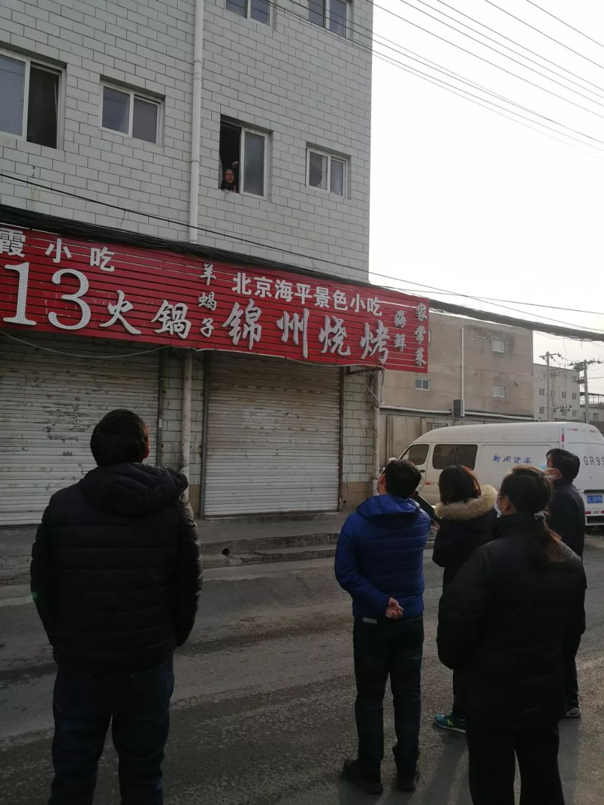
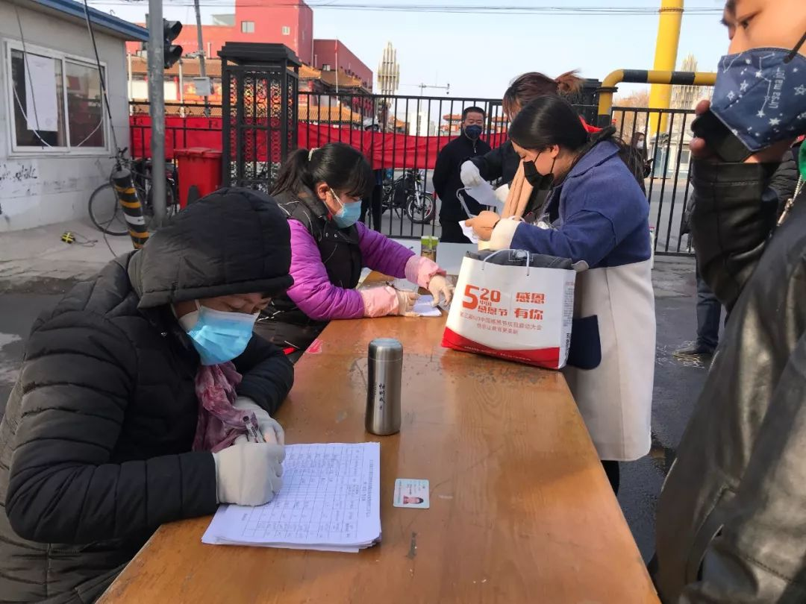
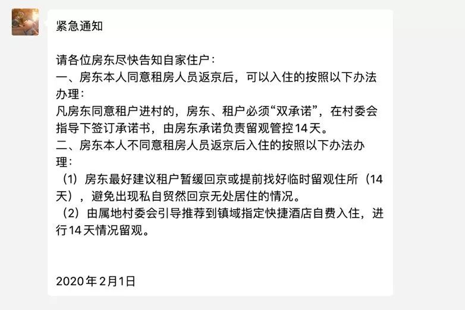

封闭社区并隔离返京人员，能遏制病毒蔓延吗？
原文链接 备份链接 数百万人的返京潮将至，北京加强防控是情理之中。但将回来的人不加区分地拒之门外或自行隔离，令本该叫好的措施变了味儿 文 |《财经》记者 信娜 孙爱民 实习记者 朱贺 编辑 | 王小 封闭社区。春节后，面对数百万人从各地陆 …
因为交通便利、价格低廉，北七家一直是京西北打工族租房的热门之选。然而今年，大批回到北京返工的租客发现：他们似乎回不去了
武大法学院教授秦前红：小区（村民）自治不能毫无边界，居住权与财产权不得侵犯
本文首发于南方人物周刊
文、图 | 本刊记者 邓郁 发自北京
实习记者 苏碧滢 王佳薇 包莉婷 宫健子 许多
编辑 | 周建平 蒯乐昊
全文约7267字，细读大约需要16分钟

2月1日东三旗村中街口岗亭，工作人员在给村民测量体温
“病毒感染发生扩散的风险加大。”1月29日，北京市疾病预防控制中心副主任庞星火在介绍北京市疫情发展时说。同一天夜里，微博上曝出消息，外地返京租客抵京后无法入住。“要求自行隔离14天、出具身体健康证明才能回家”。已经到达北京的租客有家难归、房租难退，还要额外付出高昂的酒店住宿费。
本刊记者调查走访，上述现象在“人口倒挂”现象较为突出的北七家镇最为集中。
“慌乱中，我买了自己从没买过的软卧车票”

1月30日上午，还在苏州和家人一块过年的辛梁，收到房东的信息，“别回来了，不让进村，都到宾馆隔离”，心里惴惴不安。但她又陆续看到网上各种消息，“只要登记，自我隔离14天，就可以进”。咬咬牙，抱着一丝侥幸上了高铁。
“早出来早隔离。我们这种打工的，不上班就意味着没收入。”在互联网行业工作的辛梁说。
当晚10点半，拉着沉沉的行李箱，辛梁从北京南站回到东三旗村，发现这条两公里的主路两边的小路都用铁栅栏封住了。唯一开放的中街口岗亭亮着灯，围了一堆人。
“他们说必须隔离14天，还要开健康证明。有人打了110、12345热线，那边的回复说一直在解决，需要等。房东也无奈，又要执行村里的规定，又考虑到我们为难。”
听租客和村里人争执了近一个小时，辛梁又冷又饿。到了半夜，还是没有结果。心中那一丝侥幸被浇得透凉。辛梁不想再等待，也不忍心打搅在北京的朋友，速速在网上找了家几公里外的快捷酒店住下。
“不敢住村口的宾馆，条件不好。再说，你知道是些什么人住呢？”
比辛梁晚一天出发的姬扬，怀着同样的忐忑坐上了卧铺。他租住的是宏福苑青年公寓北楼。出发前，他打过12345热线，对方登记在案后，他接到了平西府村委的电话。“给我说，外地返京人员不能回来。回来就自己隔离14天。证明是按照你的车票开始算。但我怎么才算隔离没问题呢？他们说测量体温，没有症状就可以。我说，我2月3日就要上班了。他说那你自己想办法。请不了假，我们可以帮你请。”

2月1日，在北七家镇平西府村口边，等待入村无果的租户们
姬扬还是想冒把险。也许回来后有松动呢？在互联网公司负责管理货物的他给自己的预案是：实在不行就住海淀的仓库。“里头有个旧床垫，全是灰尘也不管了，好歹可以打个地铺。再不行，就睡麦当劳肯德基。”
参考网友们的建议，他没有带行李箱，背着一个45L容量的双肩包，塞满了压缩饼干、苏打饼干、泡面火腿肠和榨菜——“够15天吃”。

姬扬在回京前采购的干粮和他的双肩包
他让妻子待在抚顺老家，自己先行出发。“我一个人可以住麦当劳，甚至翻墙进公寓。两人就不方便了。”
因为慌乱，姬扬没注意到自己买的是从没买过的软卧车厢票。那一夜，车厢冷冷清清，他住的车厢本就他一个。隔壁的一家三口，男人和小孩咳嗽不止，姬扬不敢开门。到半夜，才有个大学生模样的男孩进来，但两人都很谨慎，一夜无话。
辗转反侧的夜晚，他最惦记的是养了四年多的猫拉菲。这只黏人的猫，第一次和姬扬分离10天之久。
“我本来给它留了10天左右的食物和水。要是隔离14天，它就必死无疑。我想求物业给我照看一下。但是物业说他们也没人手，其他邻居我也不认识……”

1月31日，北京某商店门口的告示
“一刀切”的村口现场
1月29日夜里9点52分，微博ID为“最后一颗布洛芬”的网友发出西北旺图景嘉园小区“抵制返京租客入住”的信息，称“不查身份证不量体温不看是否湖北来的情况下，一律一刀切，外地人统统不让进去。破五晚上9点半的北京寒冬里，妈妈带着孩子也不让进去……做法实在野蛮。”
该小区租客孙先生告诉记者，那天夜里，他从机场回到图景嘉园已经10点左右，在场有来自四个家庭的六个租客。在和门口保安“谈判”、交涉数小时都没有进展。迫于无奈，拿着行李箱回不了家的租客们拨打了110。

1月31日，图景嘉园小区要求返京人员抵达小区时填写的承诺书
“当地派出所所长和民警都来了，他们也跟村里（小区工作人员）掰哧了半天，但不管用。村民很义正辞严，说这规定是‘为了这边的家’。派出所所长讲，那这也是租客的家。但对方就说，这是小区自治。谁来也没用。”
长期从事宪法学、地方自治研究的武大法学院教授秦前红指出，所谓社区（村民）自治是一种有限度的自治，大家通过共同的协议行为，来完成内部事务的决策和管理，这种自治不能侵犯基本人权，“比如基本的财产权、自由权、生命健康权，这是它的边界。”
那么，哪一级的机关有权作出封闭居住区域的指令？秦前红表示，“按照防控法和紧急卫生条例，应该由全国人大常委会，或者全国人大常委会授权国务院依法组建的防控疫情的机构，(或者)至少是省直辖市这一级，来发布相关的决定和办法，不能由比这个层次更低的机关，自行以‘紧急状态的正当性’为由，莫名其妙采取一些过分的措施。”
现实情况是，由于没有一套可以广泛适用的社区防控的指导规范，很多基层干部包括住户觉得，像图景嘉园等小区的“自治”措施有一定的威慑力和作用。对此，秦教授表示，在疫情爆发之初，针对具体情况采取的某些举措，某种程度上有合理性和正当性。但到了当下的发展阶段，需要出台一个具有普遍性的办法来应对。“还有一点，小区/村里表示有上面排查和防控的压力，但是排查是要你摸清情况，去跟踪疫情的发展变化，不是说要对他人的人身、对他的居住自由采取过分的限制，甚至是剥夺。这个必须要分清。”
当晚，绝望的孙先生等租客只得分头去了附近酒店。第二天，图景嘉园的租客得到消息，只要在门口登记，签上“承诺书”，坚持测量体温，就可以进入小区。

1月31日，图景嘉园业主和租户出入时在门口登记个人信息、测量体温
其他人就没这么幸运了。1月30日，家住顺义的租客阿纯夫妇建立了返京租客微信群。“我人在东北老家，但我老公29日就回到北京了，一直还没法进小区。”阿纯说。截至2月2日，已有三百多位租客在群中“抱团取暖”。他们不理解，限制外地户籍租客的依据何在？有人开始用表格统计所在小区情况，有人贴出和房东、村里的“斡旋”经验。群里滚动着各村不同的管控措施。大家的境遇五花八门，心情也七上八下。

在平西府村等多个村口，张贴的北七家镇政府致村（居）民的信
东三旗、平西府村、皮村……租客纷纷贴出所在村发出的“禁回”令，有的是张贴出来的白纸黑字，有的只是一段微信说明。

2月1日的北七家镇平西府村口
这些村和小区，大多属于北七家镇。从南北向的立汤路往北，去往机场的路上，基本都要经过北七家。北七家下辖19个村。这里距亚运村北四公里，拥有在首都知名的“亚北车市”，地铁“动脉”5号线纵贯其间。往西北能达生命科学园、上地中关村，往南可达北京中轴线，各村里尚未拆迁的宅基地、村民自建房星罗棋布，北七家因而成为京西北打工族租房的热门之选。距离5号线北段首站天通苑北仅200米之遥的东三旗村，更是“热中之热”。
从2003年起，到东三旗村里居住的人越来越多，不少村民翻建自家房屋用于出租。通常一幢村民自建房都在三至五层，一户村民往往有几十位租客。每间房格局相似：一张床、一个写字台、一个衣柜，月租在1500到1800元，有独立卫浴的租金偏高。出于安全考虑，不能使用煤气，大家做饭都用电磁炉。

东三旗村内，1月29日之后树立的封堵栅栏，禁止外地返京租户进入，村民们都从中街路口出入
2月1日上午，记者从挨着立汤路的东三旗村西口走进主路，隔几百米左右便是简易的垃圾回收站。水饺店、手擀面、板面店、电信店、服装小店沿两侧排开，但此刻通通以卷闸门示人。除了偶尔呼啸而过的外卖摩托、三两村民，看不到多少外人。村东头墙上的宣传标语写着，“疏解整治促提升，增强群众获得感”。

2月1日的北七家镇东三旗村，各商铺皆关门闭户
西头村委会的门口，被伸缩金属门锁住。南北所有小路的路口，都封上了金属栅栏。这些栅栏门多半都是1月29日到30日刚给封上。栅栏上悉数贴着落款1月25日的《北七家镇人民政府致村（居）民朋友的一封信》。其中第三条提到：“从湖北及其他疫情发生地区回京的人员，应当按照要求居家观察14日，每日向所在村（居）委会报告健康状况，配合居住地村（居）委会、镇政府和社区卫生服务机构的服务管理。”
走到中街口，南北两头各有五六位身穿深色保安服的人值勤、监控。几位工作人员站在登记的桌边，示意经过的本地村民出示身份证、测量体温。岗亭边的地上竖立着红底白字的告示牌：“为了全体居民的健康与安全，请您配合”。
记者希望能确认“14天隔离”的具体情况，岗亭里一位戴袖章的女士让记者找镇上宣传科。就在记者了解情况时，一位身穿灰色外套的短发女士走了过来。记者介绍身份后，对方说：“我们村里不接受采访。”记者追问有关健康证明等具体信息，女士让记者问镇政府，“你去问中央和北京市的规定”。记者表示中央和北京市没有出台“禁止返京租户进入居住小区”和“需要开健康证明才能入户”的规定，工作人员的回答是，“你明不明白14天隔离什么意思？”最后，该女士以记者“和他们距离过近，有感染危险”为由，示意记者尽快离开。一位男工作人员指着记者问：“你这样，是想扩散疫情吗？”
倒挂大镇北七家的“无奈”
北七家镇的其他村情况和东三旗村相似，只是各村有很多细节上的差别。
1月31日上午，记者在白庙村东街和西街门口看到，身穿制服的工作人员会让进出村民出示他们填好的纸质“出入证”。一位在西街口守候的租客告诉记者，房东的亲戚答应帮他办理出入证，也许能够进去；有的小区居委会透露，需要房主（房东）签字或者出具同意书；还有租客心情沮丧地说，房东很明确地告知，“如果他出租的房子出现问题，村委会说以后他的房子不可以再出租，所以他们必须严格执行”。还有人说，大房东和二房东，房东和中介，态度都不一样。

1月31日，北京北七家镇白庙村口，村里规定返京租户不能入内，必须在外隔离14天
2月1日中午，从东三旗村出来，记者来到北七家镇政府。一位工作人员接待后，表示需获得昌平区宣传部同意才能接受采访。电话征得宣传部同意，记者用邮件发出了采访函，该工作人员向记者简要介绍了北七家镇的防控措施。
“首先，我们从来没有提过‘封村’。这个用词不当。”该工作人员严肃地纠正。他称，镇党委和政府很早就向各村发出了指导意见，传达过管控措施。措施的依据，来自1月29日北京市新型冠状病毒感染的肺炎疫情防控工作领导小组颁布的《社区（村）防控工作方案（试行）》。

在北七家镇党委和政府大楼三层，工作人员接受了本刊记者采访
但不论是北七家镇1月25日往各村下发的通知，还是市领导小组的这份文件，都没有提到返京租客不能进入小区，也没有提到要开健康证明。该工作人员回应，“因为1月29日到30日疫情和舆情都迅速变化。村干部们也多少有点紧张，不知如何应对。他们在随后发给租客的通知里没有提‘（房东租客）双承诺’，用简单的言语告知，措施也没写全，所以导致很多人误解。”
记者问，很多村都不让租客进，镇上是何时了解到这个情况的，有没有干预或调整？该工作人员面露难色，表示北七家镇是全北京“人口倒挂”现象最为严重的地区之一：“截止到2019年12月31日，北京市流管平台中，北七家镇流动人口数为198060人，该年度本镇的户籍人口43590人，人户分离的本市人口约10万人。”
“流动人口大大地超过本地户籍人口，相当不好管理。而且你知道现在各村最大的压力在哪里？是防控物资严重缺乏，村里的卫生消毒条件难以达标。这也是他们不敢贸然让返京租客进屋的担忧点。”该工作人员说。

2月1日下午，北七家镇平西府村，一位1月28日回村开始自行隔离的租户，从窗口接受记者采访并回答村干部的提问
当天下午走访平西府村时，这一点被该村的书记范云霞证实。
“我自己也是房东，租（出去）也好几十间房，所有周边的超市我都去了，还让我闺女从网上买，都买不着消毒液。我登记了买了点酒精，至今还没来货，消毒液得到2月4号以后才可以发货。”范云霞说自己这几天都通过微信告诉她的租客别回来，“他们都挺听我的”。
根据村干部给的数字，平西府村村民目前为1672人，租客人数则在一万三千人。“村民，加上已经回来的、过年之前没走的（租客），大概5000人左右”。这意味着近期村上将要迎来8000人左右的人流。

1月30日，北七家镇平西府村发出的“禁止外地返京人员进入我村入住”的通知
在1月30日村里发通知前，已经有三百多位外地租客回到了村里。这些人有几十位房东专门“看管”。“您说您尽量别来，您来了的话，比如说大家40间房，统共两三个人（村民）照顾，什么条件都不具备，一旦爆发的话，这责任算谁？疫情期间菜不好买，食品只能房东帮着解决。吃喝拉撒也都是这些房东帮忙。再多人来，怎么接待？”有村干部诉苦道。
在平西府村260号，房东金女士隔着一条马路，叫开了二楼靠外一间房间的窗户——那是迄今唯一从外地返回她出租屋的房客。一家三口来自河北，从1月28日返京始，已经隔离了五天。男租客从窗口露出脸来，告诉记者，“我们还挺好的！暂时不上班，我老婆是安贞医院的，她从28日回来就天天去上班了”。

2月1日，北七家平西府村内的消毒车在沿路喷洒消毒液
前述北七家镇工作人员还表示，在1月30日，北七家镇就已通知各村，安排了东三旗宾馆、燕通宾馆等三家指定宾馆，专门接纳已经抵京、无处可去的租客。这三家宾馆日常住宿费在100元以上，但他们被要求疫情期间房价控制在80到100元每天，“超出部分的旅馆成本，由镇政府兜底”。
但这几家宾馆的消息，没有通过村一级和房东，传递到大多数已返京和将要返京的租客耳里。
“我们都是在村口，给那些实在有居住困难的返京租客说的。不然这几家宾馆马上就爆满了。我们也在加班，尽量安排更多的指定宾馆。还是希望租客们能尽量晚来就尽量晚来。”该工作人员强调。
毗邻东三旗村委会和邮局的东三旗宾馆，混在周围的一堆铺面当中，门脸并不显眼。宾馆的玻璃门直接推门可入。前台值班人员向记者出示了1月30日至今的登记表，一共有34位客人入住，最右侧显示登记时的体温数据，另有一些表格填写着此后每天的体温信息。

1月30日开始至发稿时止，北七家镇安排了东三旗宾馆等四家宾馆，专门接纳辖区内有居住困难的外地返京租户入住
交谈间，两位女客人从外头进来，手里提着两大袋食品，正要刷卡准备进屋。“她们刚刚登记入住，我们也得让她们采购点生活物品吧。这以后就肯定隔离14天了，严格执行规定。”值班人员解释。
“管控外来人口这事儿，我们是宁可严、不可宽啊。一旦出了（感染所致的）人命，那我们就太对不起村民了！”离开平西府村前，某位北七家镇干部感叹。

2月1日，北七家镇平西府村工作人员登记出入人员信息
“希望一直都在”
采访中，镇上和部分村委给出了他们的态度。但房东和租客这边，情况依然扑朔迷离，前景未卜。2月1日傍晚，有几位租客在群里向大家“报喜”：“进去了！”
姬扬便是其中的一个。
2月1日下午，他抵达北京后，先去了趟通州领导家拿上仓库钥匙。和记者通话时，刚刚吃完当天的第一顿饭。“KFC啦，因为没有其他店开，我也想找个会确保消毒的地方吃东西。用酒精洗过手了，还是不敢用手直接抓汉堡。”
存着一丝希望，姬扬给物业又打了个电话，物业说房东让进就可以进。姬扬和物业沟通后，兴奋地直奔小区，“登记了，没办出入证，就进家门了”。
开门的瞬间，听到猫儿急切地“滋滋”抓挠地面的声音，姬扬有点哽咽了。“进门一看，猫粮都吃完了，水还剩一点点”。放下双肩包，姬扬去楼下超市买了一堆菜：葱蒜、圆白菜、西红柿和土豆。“节前只要三十来块，一结账一百多。老板说，没有进货渠道，都让快递打车把菜送进来。”
姬扬和他的爱猫拉菲
当晚，他打开视频，让妻子隔着摄像头看了会儿猫。但她是不是马上返京，他还是没有把握。
就在姬扬睡了安稳觉的这天夜里，微信群主阿纯在线上向大家道别，因为“（老公）已经回家了，我所在的小区，群里只有我一个人”阿纯又说，“（情况改观的）希望一直都在。”
她告诉记者，丈夫前几天每日住宾馆，每天换一家，经济压力太大。而且家有孩子，老公千万不能感染。“老家是目前我们这个省唯一没有确诊的地级市。我们都是80后，中年人了，压力格外大，你能想到一个家里顶梁柱被村民架出小区的窘迫吗？”
1月31日晚，北京市发布通知，企业复工可以延期到2月10日，此前则可以灵活方式上班。还在家等待消息的返京客们多少松了口气。但对那些已经抵达北京，或因为公司要求2月3日到岗，正在路上、即将出发的务工人员，这个消息让他们略感尴尬。
据了解，随着疫情发展和返工潮临近，北京大多数小区对业主和租户都逐步开启了半封闭式管理。有部分小区仅留有一个出口，24小时有人值守，个别小区还要求对出入人员体温进行监测。而据不完全的民间自发统计，限制返京租客回家的事件，不独北边，在北京西城、海淀、丰台、朝阳、通州等区的数十个小区都有发生。2月1日下午，北京市政府副秘书长陈蓓在新闻发布会上表示：“除从湖北返京的人员外，任何社区（村）和物业部门，没有权利自行阻止体温检测正常的返京人员进入社区。”这是继北京市民政局1月31日回应“不能一刀切”后，北京市政府的又一次表态。
针对这些局面，秦前红认为，首先要（保证）信息流动的自由，利益相关者的表达自由。“经过SARS的前车之鉴，中国的治理能力应该要有一个转型，走向现代化。各地为政、地方主义和保护主义盛行，包括像封路、封村、暴力封家门，对湖北人武汉人的歧视，都显示了一种无序和失血状况。放任下去，会撕毁社会信任的纽带，也给整体抗疫机制的运行形成挟制。”
2月2日凌晨1点多，北七家镇的工作人员告诉记者，镇党委和政府连夜开会，意识到之前有的村执行规定时“简单粗放，对上级意图理解有偏差”。因此已经讨论、出台了最新管控措施，关键信息如下：
1.先尽量劝阻未返京租客，尽量暂缓返京。
2.体温正常的返京租客和房东分别签订“主动隔离承诺书”，只要保证入村后14天隔离，即可进村。
3.要求村委会主动做房东工作。房东不同意签承诺书的，由村（社区）协助解决住宿，引导到指定宾馆。目前宾馆已经安排了四家，共有326个房间可提供入住。
“昨天（2月1日）晚上，我们就要求所有存在‘简单化执行进出管理措施’的村，都进行了规范。今天早上我就在村口监督执行。”2月2日中午，该工作人员告诉记者。但新规通过口头和网络传达，北七家镇表示不会发布有关新规的具体文件。

1月31日北京某公交车上，司机佩戴了双层口罩
截至2月2日，记者采访的二十多位租客，有少数收到了有关“双向承诺书”的信息。群里的其他租户，则陆陆续续收到来自房东和村里的新信息。一方面，有租客表示，房东态度坚决，不同意签署承诺书。“宾馆条件我们也担心。其实这是村镇把问题推给了房东。”但也有一些好的变化。“目前很顺畅，不是很严，也不需要房东啥的开证，登记就行……可能是政策宽松了，他们（村里）也松了一些，今天门口的人态度真不错，出乎意料。”2月2日晚上6点，一位租户在群里发言。

2月1日，北京北部某村通过房东发给租客的信息
姬扬说，妻子已经买了2月2日出发、2月3日到的车票。北京有许多用人单位已安排复工，第一波员工返京潮迫在眉睫。
（除秦前红外，文中所有姓名为化名）
新型冠状病毒肺炎专题：


征集疫区真实故事，记录我们的命运
《南方人物周刊》现面向所有新冠肺炎一线的读者征稿，写下你正在经历或亲眼所见的故事。如果你是一线医护人员或其家属，疫区公共服务人员，病患本人或家属，专业人士等等，如果你有故事、有困难、有建言，请让我们知道。我们也同时征集采访对象和新闻线索，留下你的联系方式，我们的记者会同您联系。我们会充分保护受访者的隐私。
隔离疫情，但不隔离爱。写出你的真实故事，你的困境和希望，记录我们共同的命运，围城内外携手共度。
此次征稿形式不限：文字（2000字左右）、图片（原创拍摄）、音频视频（原创录制）
祝愿所有在疫区和不在疫区的朋友们，新春快乐，平安健康。
投稿方式：
1、直接给本篇文章留言，格式为：【线索】+内容+您的电话（留言不会被放出，绝对会对您的个人信息保密）
2、《南方人物周刊》微信公号投稿邮箱：wuhantingzhu@126.com
3、《南方人物周刊》官方微博讨论话题：#我在疫区有话说#
注：请务必保证投稿内容的真实、客观、理性，不造谣，不传谣。
原文链接 备份链接 数百万人的返京潮将至，北京加强防控是情理之中。但将回来的人不加区分地拒之门外或自行隔离，令本该叫好的措施变了味儿 文 |《财经》记者 信娜 孙爱民 实习记者 朱贺 编辑 | 王小 封闭社区。春节后，面对数百万人从各地陆 …
原文链接 备份链接 在法律界人士看来，各地自行采取的“封村”、“封小区”等极端做法涉嫌违法。防控疫情需要全国一盘棋，而不是“各扫门前雪” 这家小区加强登记筛查但未将租客拒之门外 文 |《财经》记者 王博 周源 陈潇潇 马霖 王凤 杨立赟 …
原文链接 备份链接 《战疫口述记》，是燃财经在新型冠状病毒肺炎期间推出的特别栏目，记录疫情亲历者的观察和感受。本文为第4篇，查看前3篇请点击《我的“流浪”春节》《农村这样防肺炎》《我在武汉战肺炎》。 作者 | …
原文链接 备份链接 经济观察网 记者 饶贤君 尽管北京市人民政府副秘书长陈蓓在2月1日表态，所有返京人员在接受了相应的医学观察和体温检测后，社区、村、物业部门，无权自行阻止返京人员进入小区，但返京租户的回家路依然面临阻碍。 自如、相寓等长 …
原文链接 备份链接 壹 下午五点左右，北京地铁宋家庄站内看不到多少人。我穿过闸机，搭上一趟刚进站的列车，整节车厢里除了一位身着制服的工作人员，没有其他乘客。 这天是大年初二。因为担心城际高铁暂停和高速封路，我急匆匆从天津返回北京。街道 …